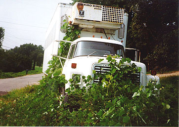
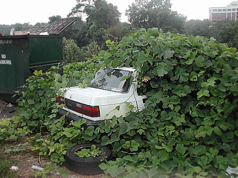
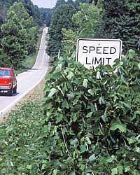

|
 KudzuTo be considered "carnivorous," a plant must fulfill two requirements: it must be able to absorb nutrients from dead animals near its surfaces, and it must posses an evolutionary adaptation whose primary mission is the active attraction, capture, and digestion of prey. Because carnivorous plants like the Venus Flytrap live in poor soil, they can only thrive in boggy, marshland environments or man-made greenhouses with a high level of humidity. Kudzu on the other hand, while hardly carnivorous, is by definition an invasive alien species, often referred to as the rodent of the botanical world. It can grow nearly anywhere. In warm, humid climates, a single kudzu chain can grow over a foot each day. It scales up and over walls, climbs telephone poles, and effectively replicates itself into surrounding neighborhoods in all directions, multiple city blocks at a time. Kudzu scales and coils around power lines, reaching out in rainy weather to cause electrical arcs and power outages approximately three hundred times each year. It drapes itself over trees and entire forests, concealing them like an enormous picnic blanket. When left to its own devices, it will expand in size and scope to cover any fixed object in its proximity. Nearby vegetation will be completely destroyed, as Kudzu moves to block any and all available sunlight to competing greenery. Kudzu is a living, breathing vine, native to Japan and China. As early as 2699 B.C., Chinese Emperor Chon-nong listed Kudzu in a catalog of herbs. In Japan, the roots are made into Kudzu powder, which is used like cornstarch for thickening, while the leaves are cooked as vegetables.  The vines can also be spun into fibers, and woven into water-resistant cloth. Kudzu plants were originally imported to the United States as "workhorse" plants in 1876 during the Centennial Exposition in Philadelphia, Pennsylvania. The expo was a science fair on a grand scale, and people were invited to display exhibits celebrating the country's 100th birthday. Since Kudzu had large leaves and sweet-smelling blooms, American gardeners latched onto it for decorative purposes. Little did the farmers know the plant would soon latch back. Charles and Lillie Pleas were Florida nursery operators who discovered that
animals would happily eat the plant, and promoted its use for forage in the
1920s. Their Glen Arden Nursery in Chipley sold Kudzu plants and seeds through
the mail, and their nursery proudly displayed an historical obelisk marker bearing
the phrase "Kudzu Developed Here." During the Great Depression, the
Soil Conservation Service promoted Kudzu for erosion control. Hundreds of young
men were given work planting Kudzu through the Civilian Conservation Corps.
Farmers were paid as much as eight dollars an acre as incentive to plant fields
of these "Miracle Vines" in the 1940s. This would later turn out to
be the worst agricultural blooper American farmers had Yes, at first the plant helped prevent erosion. By planting Kudzu along inclined slopes near the sides of heavily-trafficked roads, the vines served as strong netting, resulting in fewer mudslides and reduced property damage. Hugh H. Bennett was head of the United States Conservation Service in 1945. He wrote and essay extolling the virtues of Kudzu for Reader's Digest: "What, short of a miracle, can you call this plant? Kudzu has forced our service to revise our appraisal of a lot of severely eroded land as having been ruined for further agricultural use. And it is not only a crop for gouged-out land; it is a splendid crop for good land, too. It will cover a cornfield in one year; the next spring or summer it can be plowed and the land planted to corn; then after the last cultivation of the corn it will again spread over the field, stop the erosion, store more nitrogen, and at the first hard frost lay down a carpet of rich leaf litter at least the equal of forest litter. All this in one year!" Indeed. Under the right conditions, Kudzu vines can grow sixty feet per year, strangling everything unchecked in its path. Kudzu was exalted and praised for decades for its vigor and disease-resistant attributes, despite warnings published in 1938 by botanist David Fairchild. He warned about the invasiveness of the plant, predicting it would become a nuisance to farmers, road workers, and slow-moving children.
In 1972, the USDA finally hopped down off its high horse and declared that
kudzu was a weed, not a precious crop sent from heaven above. The U.S.
Forest Service in Auburn, Alabama began to research methods to destroy it. Herbicides
were the first approach - until it was determined the plant had actually developed
a taste for plant killer, making it even stronger. By 1997, Kudzu had been declared
a noxious weed, which essentially created a mandate for people living
in high-risk Kudzu areas to remove as much of the plant as they could from their
property. "Most people don't care how kudzu got here", says Tom Kowalski of the state Department of Agriculture. "They don't want to know where it came from or how it got here. They want  chemicals to kill it and they want them now, and they want to kill it in one spraying. But you can't just spray it once and have it go away. The reason it's here, and the reason it was planted so extensively, is because it is so [goddamn] tough." Kudzu now covers nine million square miles of the United States, and shows no signs of slowing down. In the deep south, legend dictates that you keep your windows closed and locked at night, lest it creep in and bury your children. To this day, there's only one surefire method of attacking the Kudzu problem: let loose an army of goats and sheep, and have them snack on it until they're satiated. |
 ever
seen.
ever
seen. So what's the big deal? Just put up a help-wanted poster, get a bunch of workers
to yank the plant up out of the ground and throw the discarded bags behind a
So what's the big deal? Just put up a help-wanted poster, get a bunch of workers
to yank the plant up out of the ground and throw the discarded bags behind a
 Good luck with that.
Good luck with that.